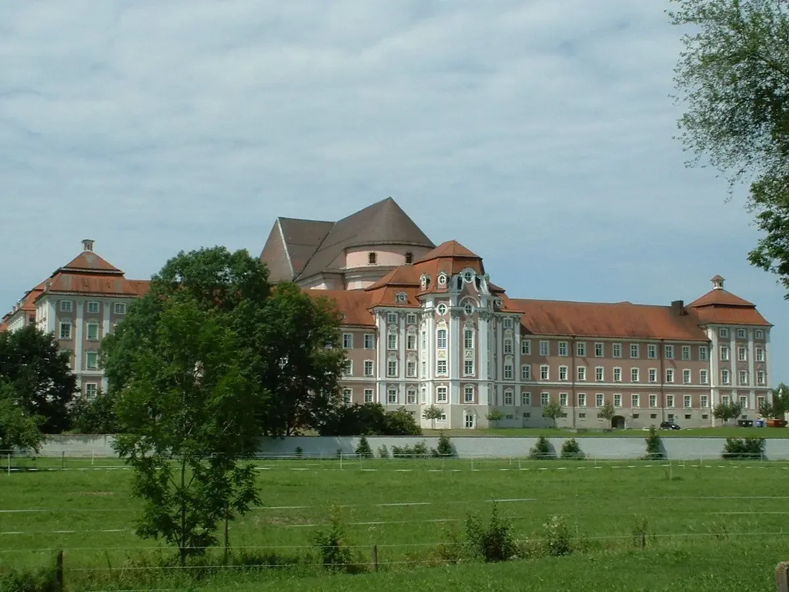
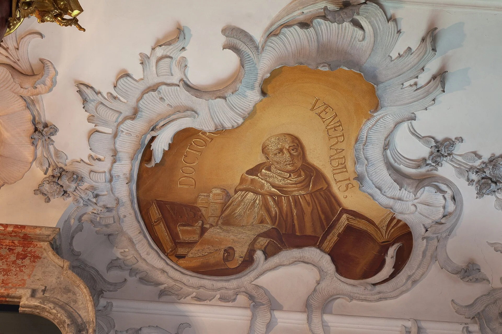
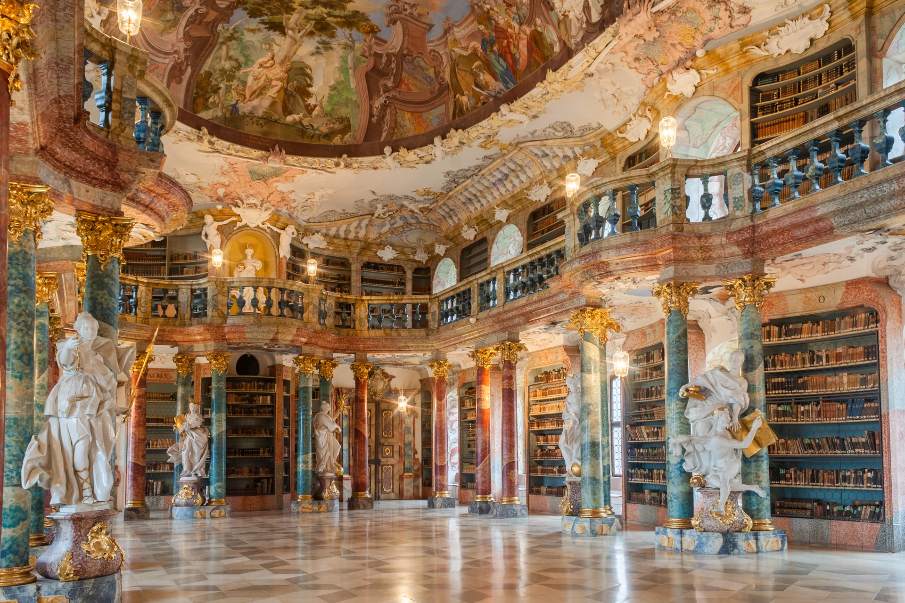
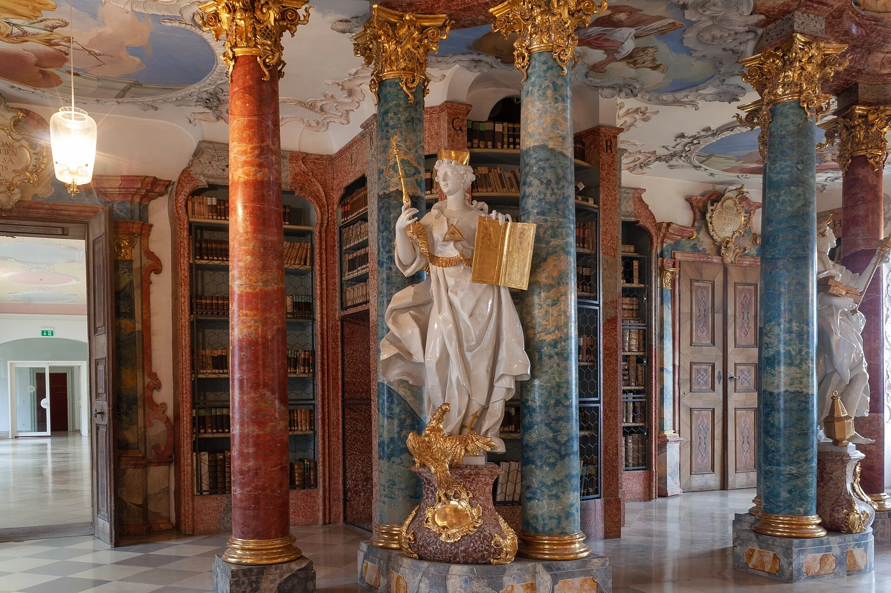
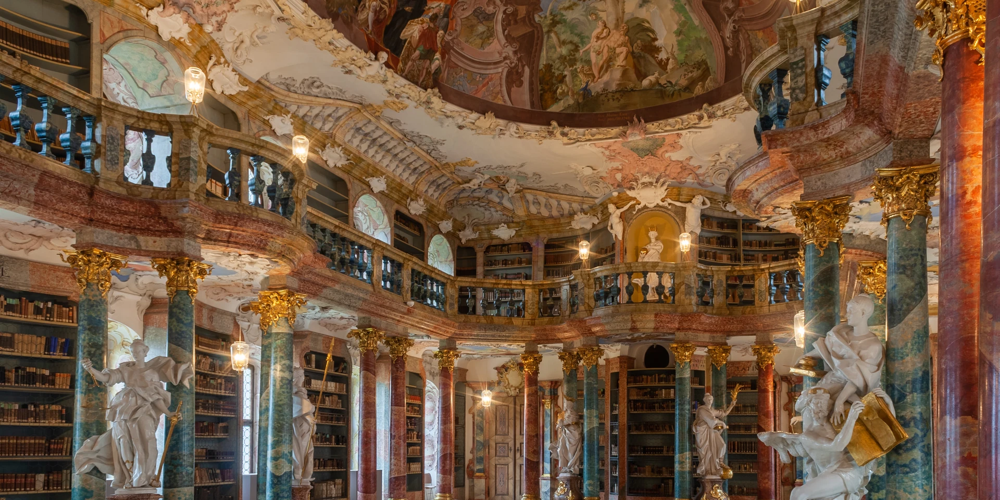

아직 펼치지 않은 카드책으로 지은 궁전 · 3비블링겐 수도원 도서관이 수도원은 1806년에 문을 닫았어요. 그런데 그 안의 한 방만큼은 지금도 그대로 사람들을 맞고 있어요. 어떤 방일까요?하얀 방에서 조각상들이 책을 지키고 있대!
1744년독일 울름 · 비블링겐 수도원 도서관
비블링겐 수도원 도서관
1744년, 젊은 화가 쿠엔이 비블링겐 수도원 도서관의 천장을 그렸어요. 수도원은 문을 닫았고 책들은 흩어졌지만, 방은 남았어요. 등불을 들고 이 방에 감추어진 것들을 찾아보세요.
독일의 옛 수도원에 하얀 조각상들이 서 있는 책의 방이 있대. 등불을 들고 숨은 것을 찾아볼까?
검수 전 시안이에요(기준서 1판). 장면에는 비블링겐 수도원(바덴뷔르템베르크 주립 궁전·정원청)의 설명과 보도 자료, 독일 인물 사전, 도서관사 연구에 있는 것만 옮겼어요. 상상은 ‘눈 감고 상상해 보기’에만 썼어요.
시안 확인용카드 단계 미리 보기
1
손으로 베낀 책에서
비블링겐 수도원 도서관의 이야기는 늦은 중세까지 거슬러 올라가요. 베네딕도회 수도자들은 글 쓰는 방에서 책을 손으로 힘들여 베꼈어요.
수도자들은 1500년 전에 찍은 초기 인쇄본과 그 시대의 새 책도 모았어요. 14세기에 책을 빌려준 기록과 1736년의 책 목록이 지금도 남아 있어요.

이 둥근 그림은 도서관 벽에 있어요. ‘존경받는 박사(DOCTOR VENERABILIS)’라는 글 안에, 책과 두루마리 사이에 앉은 수도자가 그려져 있어요. 수도원은 이 방의 그림들이 수도원의 학문도 담았다고 설명해요.
옛날 수도사님들은 책을 한 장 한 장 손으로 베껴 썼대.
물어보기책 한 권을 손으로 다 베껴 쓰려면 얼마나 걸릴까?
2
지혜와 학문의 모든 보화
1740년부터 1750년까지, 마인라트(Meinrad) 수도원장 때 새 도서관을 지었어요. 길이 23m, 깊이 11.5m의 방이 두 층 높이로 수도원 북쪽 건물을 가득 채워요.
서쪽 입구 위 장식판에는 골로새서의 한 구절이 적혀 있어요. 수도원은 그 뜻을, 이곳에 ‘지혜와 학문의 모든 보화’가 있다는 말로 풀어요. 골로새서 2장 3절은 그리스도 안에 지혜와 지식의 모든 보화가 감추어져 있다고 말해요.

전성기에는 책이 1만 5천 권쯤 있었어요. 그 시대의 몇몇 대학 도서관보다 많았어요.
책들도 방의 꾸밈에 맞췄어요. 책등을 모두 하얗게 칠하거나 밝은 종이를 붙였어요. 수도원은 이렇게 해서 비싼 돼지가죽 장정 값도 아꼈다고 설명해요.
책이 1만 5천 권이나 있었대! 책등을 하얗게 칠해서 방이랑 어울리게 했대.
물어보기네 책들을 모두 한 가지 색으로 칠한다면, 무슨 색으로 할래?
3
흩어진 책, 남은 방
1806년 가을, 뷔르템베르크가 수도원을 닫았어요. 이듬해인 1807년, 도나우슈테텐 마을의 요제프 슈베르트(Joseph Schwerdt) 신부가 책 목록을 만들었어요. 슈투트가르트에서는 그 목록으로 비블링겐의 손글씨 책을 골랐어요.
1808년, 손글씨 책 33권이 슈투트가르트의 왕립 공공 도서관으로 갔어요. 나머지 책들도 여러 도서관으로 흩어졌어요.

그래도 방은 남았어요. 수도원은 이 방의 밝고 즐거운 분위기가 그대로 남았다고 말해요. 조각상은 지금도 금빛 책을 펼쳐 들고 서 있어요.
수도원이 문을 닫고 책들은 여기저기로 흩어졌대. 그래도 방은 그대로 남았어.
물어보기아끼던 책이 멀리 가게 되면, 어떤 마음이 들까?
4
등불을 들고
1744년, 1719년에 태어난 젊은 화가 프란츠 마르틴 쿠엔(Franz Martin Kuen)이 이 방의 천장을 그렸어요. 한가운데에는 천사들에 둘러싸인 여인, 모든 것을 다스리는 ‘하느님의 지혜’가 있어요.
수도원은 이 천장이 서양 지식의 이교와 그리스도교 뿌리, 그리고 수도원의 학문을 담았다고 설명해요. 이제 등불을 들고, 이 방에 감추어진 것들을 찾아보세요.
손가락이나 마우스로 문질러, 어두운 도서관을 등불로 비춰 보세요.

비블링겐 도서관 홀 · 천장 그림 프란츠 마르틴 쿠엔, 1744년(사진의 부분) · 사진: Spatzameez · CC BY-SA 4.0 · 위키미디어 공용
빛이 닿으면 숨은 표시가 나타나요.
네 곳을 다 찾았어요. 수도원은 이 방을 ‘지혜와 학문의 모든 보화’를 위한 방이라고 소개해요.
깜깜한 도서관에 등불을 비춰 봐. 숨은 것들이 하나씩 보일 거야!
물어보기등불로 비췄을 때 가장 먼저 무엇을 찾고 싶어?
눈 감고 상상해 보기
겨울 저녁, 도서관 문을 열고 들어서요. 바깥은 벌써 어둡고, 손에 든 등불만 바닥의 돌무늬를 비춰요. 불빛이 기둥을 타고 오르면 분홍빛 대리석 무늬가 살아나고, 하얀 조각상의 금빛 책이 반짝여요. 고개를 들면 어둠 속 천장 어딘가에 무언가 숨어 있어요.
눈을 감아 봐. 깜깜한 도서관에 등불을 들고 들어가. 불빛이 기둥을 비추고, 하얀 조각상이 금빛 책을 들고 있어. 천장 어딘가에 무언가 숨어 있어!
나의 자리
내 삶의 문을 하나둘 닫게 되더라도 꼭 남기고 싶은 ‘방’ 하나는 무엇인가요?
너만의 비밀 도서관을 만든다면 어떤 책을 넣을래?
마음에 닿는 한 줄을 고르거나 직접 써 보세요. 한 줄을 남기면 이 자리의 도장이 찍혀요. 이 기기에만 저장돼요.
더 깊이
궁금한 칸만 펼쳐 읽어도 괜찮아요.
알고 보면
수도원이 닫힌 뒤 뷔르템베르크의 하인리히 공작이 잠시 성으로 썼고, 뒤에는 오랫동안 보병 막사가 되었어요. 지금은 보건 직업 아카데미가 들어 있어요.
여러 수도원의 책 이 무렵 문을 닫은 남서 독일 수도원들의 책은 이리저리 흩어졌어요. 그때 귀하다고 여긴 책은 큰 모음으로 갔고, 지금은 카를스루에와 슈투트가르트의 주립 도서관, 여러 대학 도서관에 귀한 책들이 남아 있어요.
화가 쿠엔 독일 인물 사전에 따르면 쿠엔은 1719년 11월 8일 울름 가까운 바이센호른에서 세례를 받았고, 1771년 1월에 세상을 떠났어요.
기록마다 다른 점
언제 다 지었나 수도원은 이 방을 1740년부터 1750년까지 지었다고 해요. 천장 그림은 1744년에 그렸어요. 그래서 1744년을 도서관이 다 된 해로 적은 글도 있어요.
책은 어디로 갔나 1808년 손글씨 책 33권이 슈투트가르트로 간 것은 연구에 남아 있어요. 다른 책들이 어디로 갔는지는 수도원도 ‘여러 도서관’이라고만 적어요.
직접 가 보기
확인한 날 · 2026년 11월 18일 · 바뀌기 쉬운 정보라 정기적으로 다시 확인해요
도서관 홀과 수도원 박물관은 계절마다 여는 날이 달라요. 가기 전에 수도원 누리집에서 여는 때를 확인하세요.
등불로 찾은 네 곳 금박
어두운 도서관에서 숨은 네 곳을 모두 찾아 읽으면 카드에 금박이 입혀져요.
등불로 숨은 네 곳을 모두 찾기
아이와 함께 채색
아이와 함께 끝까지 보면 카드가 채색돼요.
아이와 함께 ‘영화처럼 보기’를 끝까지 보기
근거 보기 (11)
- 비블링겐 수도원(바덴뷔르템베르크 주립 궁전·정원청): 도서관 홀 — 1740~1750년 마인라트 수도원장, 두 층·23m×11.5m·북쪽 건물, 안팎으로 휜 회랑, 입구 위 ‘지혜와 학문의 모든 보화’, 서쪽 입구 위 골로새서 장식판, 헤르베르거의 조각, 쿠엔 1744년·서명 ‘Franc. Martinus Kuen iunior pinx. Ano 1744’, 천사에 둘러싸인 하느님의 지혜, 이교와 그리스도교의 지식·수도원의 학문, 아담과 하와(타락) 부분, 회랑 아래 조각과 그림, 1만 5천 권, 하얀 책등·돼지가죽 값을 아낌, 흩어진 책
- 궁전·정원청 보도 자료(2022): ‘지혜의 보물’ — 늦은 중세의 글 쓰는 방과 손으로 베낀 책, 초기 인쇄본과 새 책, 1만 5천 권과 귀한 손글씨 책, 하얗게 칠하거나 밝은 종이를 붙인 책등, 세속화 때 가져간 귀한 책
- 궁전·정원청 보도 자료(2022, 영어): 천사들에 둘러싸여 모든 것을 다스리는 하느님의 지혜, 대학 도서관보다 많던 책
- 궁전·정원청 보도 자료(2023): ‘지혜와 학문의 모든 보화’를 위한 잔치의 방, 하얀 책등, 세속화 뒤 흩어진 책, 그대로 남은 밝은 분위기
- 궁전·정원청 보도 자료(2014): 문 위 라틴어 글, 1만 5천 권, 천장의 하느님의 지혜, 19세기의 손실(흩어진 책, 큰 모음으로 간 귀한 책, 카를스루에·슈투트가르트 주립 도서관)
- Heribert Hummel, 「Bilderhandschriften aus den Benediktinerklöstern Elchingen und Lorch」 — 1806년 가을 뷔르템베르크가 닫은 비블링겐, 1807년 도나우슈테텐의 요제프 슈베르트 신부의 책 목록, 1808년 손글씨 책 33권이 왕립 공공 도서관으로
- 궁전·정원청 학술 모임 안내(2025): 14세기 비블링겐의 대출 기록과 1736년 책 목록(그림 설명)
- 독일 인물 사전(Deutsche Biographie): 프란츠 마르틴 쿠엔 — 1719년 11월 8일 바이센호른에서 세례, 1771년 1월 30일
- 비블링겐 수도원: 걸어온 길 — 세속화 뒤 하인리히 공작의 성, 보병 막사(‘성 막사’), 지금의 보건 직업 아카데미
- 골로새서 2장 3절(개역개정) — 그리스도 안에 감추어진 지혜와 지식의 모든 보화
- 창세기 3장(개역개정) — 선악을 알게 하는 나무
그림·사진·소리 출처
‘처음 만나는 기독교 문화’의 깊은 카드예요. 실제 인물의 사진은 쓰지 않았어요. 카드 단계와 남긴 글은 이 기기에만 저장돼요.